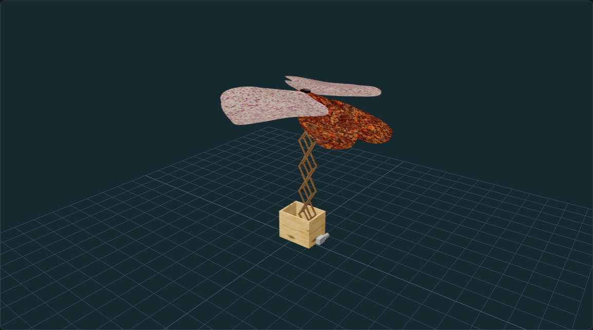

QUELEC · FLORECIMIENTO
Flores pequeñas

Abriendo el modelo original…
Arrastra para girar y usa la rueda o el gesto de pinza para acercarte.
El visor muestra cómo la tijera eleva y baja la corola entre la posición baja de ensayo y la desplegada. El guardado completo y la apertura de los pétalos quedan pendientes de prueba.
Artes para sublimación
Lienzo de 203,2 × 203,2 cm · 12.000 × 12.000 px · 150 ppp · sRGB